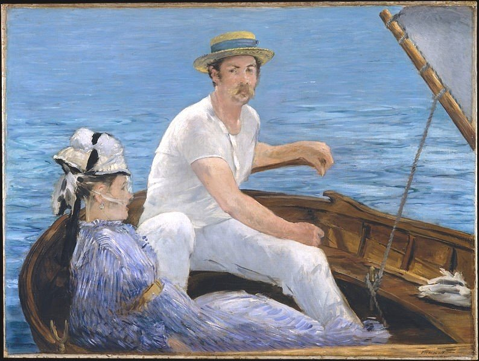
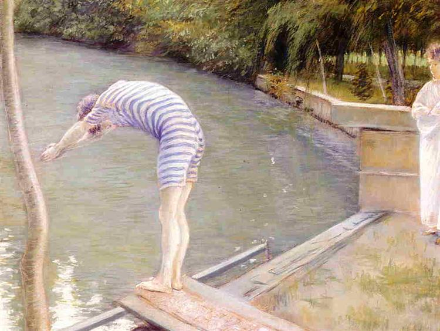
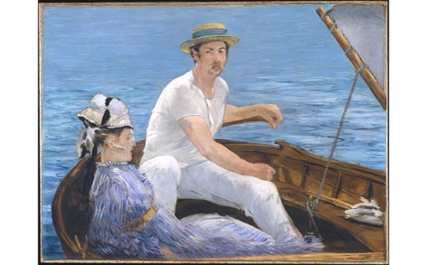
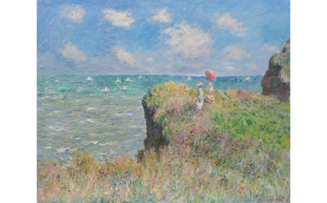
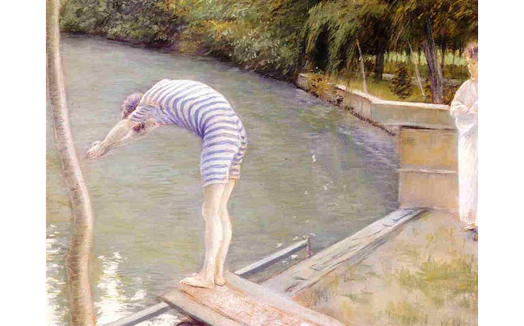
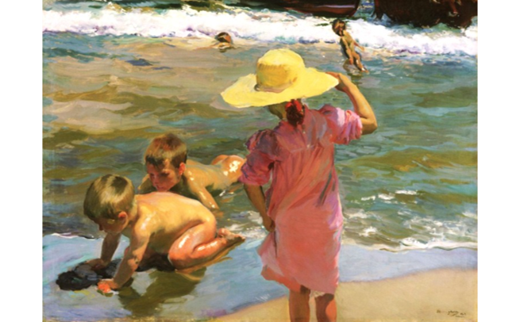

Classic : Summer

Morning Sun
캔버스에 유채, 70 x 55cm, 1952년
에드워드 호퍼(Edward Hopper) 작

바다와 면한 방(Rooms by the Sea)
캔버스에 유채, 74 x 102cm, 1951년
에드워드 호퍼(Edward Hopper)

해변 산책(Strolling along the Seashore)
캔버스에 유채, 205 x 200cm, 1909년
호아킨 소로야(Joaquín Sorolla) 작

Time For A Bathe, Valencia
캔버스에 유채, 105 x 105cm, 1909년
호아킨 소로야(Joaquín Sorolla) 작
- 
뱃놀이(Boating)
캔버스에 유채, 97 x 130cm, 1874년
에두아르 마네(Edouard Manet) 작

푸르빌의 절벽에서(The Cliff Walk at Pourville)
캔버스에 유채, 66.5 x 82.5cm, 1882년
클로드 모네(Claude Monet) 작
- 
The Bather, or The Diver
종이에 파스텔, 69 x 88.5cm, 1877년
귀스타브 카이보트(Gustave Caillebotte) 작

바닷가의 아이들(Children on the Beach)
캔버스에 유채, 96.2 x 130.5cm, 1903년
호아킨 소로야(Joaquín Sorolla) 작


- 
- 
- 
- 